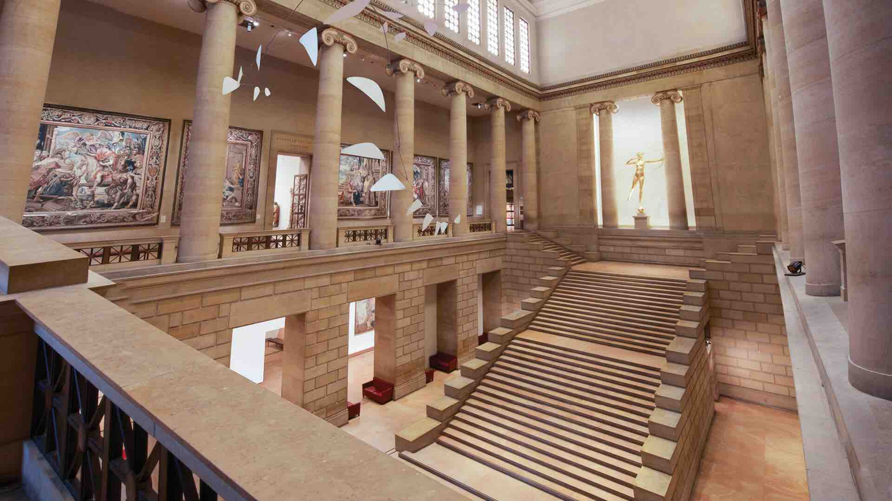
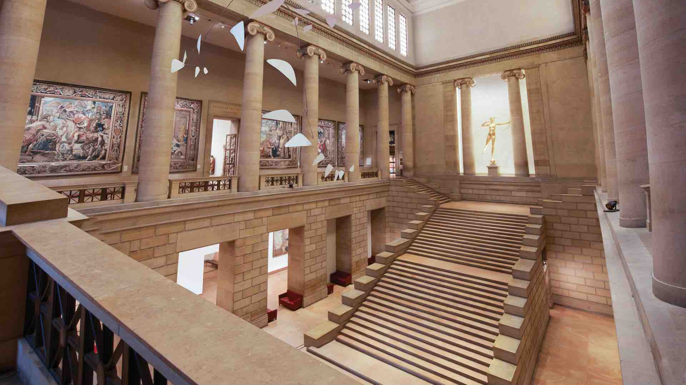

Philadelphia Museum of Art
Horaŕio funcionamento: 10h as 17h
O Museu de Arte de Filadélfia, localizado na cidade de Filadélfia, nos Estados Unidos foi criado em 1876 e hoje é um dos maiores e mais importantes museus dos Estados Unidos. É conhecido localmente como o The Art Museum e sua coleção abriga mais de 225 000 objetos.
. É comum ver os visitantes imitarem a famosa cena das escadarias, que agora são normalmente chamadas de Rocky Steps. Uma estátua de bronze de Rocky foi colocada no topo das escadas para as filmagens de Rocky III e Rocky V. Logo depois foi removida do local, mas agora pode ser novamente vista no mesmo lugar.